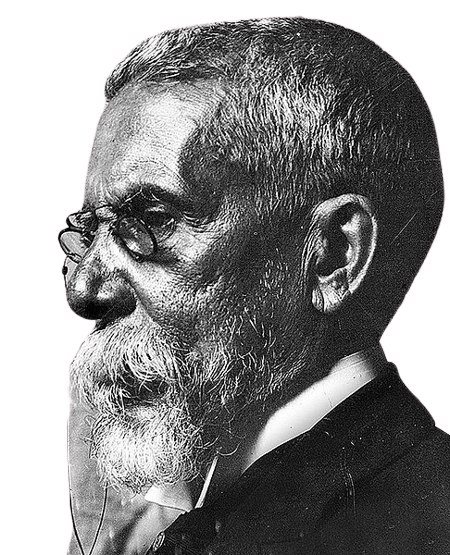

Biografia
Joaquim Maria Machado de Assis foi um exímio escritor brasileiro, nascido em 21 de junho de 1839, no Rio de Janeiro, e foi um dos nomes mais importantes da literatura do século XIX. Sua arte baseia-se em obras de diversos estilos como crônicas, poesias, críticas literárias, peças de teatro, porém, sua escrita alcançou seu auge, principalmente, nos contos e nos romances, repletos de ironia. Além disso, a partir de Memórias Póstumas de Brás Cubas, o também chamado de Bruxo do Cosme Velho, descobriu um verdadeiro talento na análise do comportamento humano e sua moral.
Em sua vida, Machado pode-se considerar um homem bem-sucedido, foi o principal fundador da Academia Brasileira de Letras e se tornou o primeiro presidente dela, mesmo enfrentando muitas adversidades como o preconceito que sofria desde pequeno, por ser negro, gago, epiléptico e órfão de mãe.
Devido a sua genialidade, é fundamental que a imagem do Bruxo do Cosme Velho seja admirada e preservada, e que suas obras sejam disseminadas e compartilhadas pelo mundo todo.
